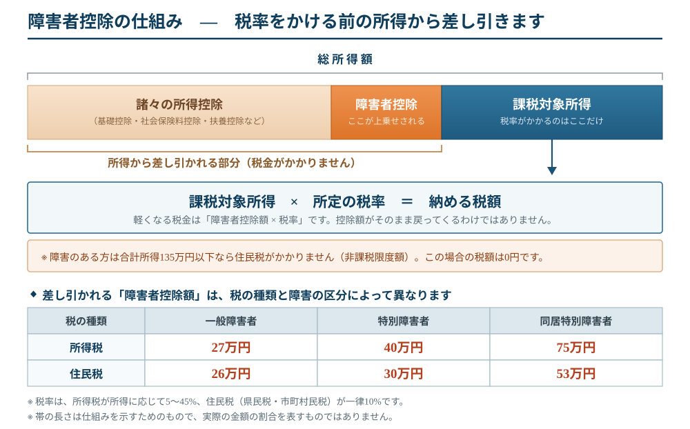

— 知らないと損をする6つの制度／保護者のみなさまへ —
1所得税・住民税の障害者控除毎年年末調整・確定申告 1年間の所得から一定額を差し引ける制度。本人に収入がなくても、扶養している親の側で受けられます。 ・一般障害者 … 27万円 ／ 特別障害者 … 40万円 勤務先の年末調整の用紙、または確定申告書に記入するだけ。さかのぼって5年分の還付請求もできます。 2相続税の障害者控除相続のとき効果が特に大きい お子さんが財産を相続するとき、85歳になるまでの残り年数に応じて、相続税そのものから直接差し引けます。①と違い、所得ではなく税額から直接引くため、控除額がそのまま効きます。 ・一般障害者 … 1年につき 10万円 例）40歳・特別障害者の方 3特定贈与信託（贈与税の非課税）親なき後の資金管理信託銀行 親がまとまったお金を信託銀行に預け、銀行が生活費・医療費を本人へ定期的に渡し続ける仕組み。預けた分に贈与税がかかりません。 ・特定障害者（中程度の知的障害、精神2・3級）… 3,000万円まで 親が亡くなった後も本人の手元に一度に大金が渡らず、使い切り・トラブルを防げるのが最大の利点。取扱う金融機関が限られるため事前相談を。 |
4心身障害者扶養共済（しょうがい共済）親なき後の生活費都道府県の制度 親が掛金を払い、親が亡くなった後にお子さんへ月2万円（1口）を一生涯支給する制度。2口まで加入できます。 ・受け取る年金 → 所得税は非課税 加入は市区町村の障害福祉担当窓口へ。親の年齢が上がるほど掛金も上がるため、検討は早いほど有利です。 5少額貯蓄の利子等の非課税（マル優）預貯金窓口手続きが必要 預貯金の利子には通常20.315%の税金がかかりますが、元本 350万円までの利子が非課税になります。 さらに国債・地方債にも別枠で350万円（特別マル優）。合わせて700万円分まで使えます。 自動では適用されません。手帳や年金証書などを持って、金融機関の窓口で申込みが必要です。 6あわせて確認：相続登記の義務化令和6年4月1日から過去の相続も対象 不動産を相続した人は、取得を知った日から3年以内に相続登記の申請が義務づけられました。正当な理由なく怠ると10万円以下の過料が科される可能性があります。 施行前に発生した相続にも適用されます。「亡くなった祖父名義のまま」という土地・建物がないか、この機会にご確認ください。 |
※金額・要件は令和8年（2026年）時点の制度に基づく概要です。個別の適用可否は、税務署・税理士、市区町村の障害福祉窓口へご確認ください。
— 表面①「所得税・住民税の障害者控除」の仕組み —

この図から分かる3つのこと1. 控除額がそのまま戻るわけではありません。 2. 所得税と住民税では控除額が違います。 3. 所得によって効果が変わります。 |
あわせて知っておきたいこと◆ 税金がもともと0円のご家庭にも、別の効果があります。 ◆ 表面②の相続税の控除は、別の仕組みです。 ◆ 手続きはどこで。 |
※ 金額・要件は令和8年（2026年）時点の制度に基づく概要です。個別の適用可否は、税務署・税理士、市区町村の税務担当窓口へご確認ください。